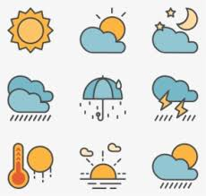

Vi älskar besökare och har därför samlat information om vår fina gästhamn.
Längre ner finner du också en väderprognos som uppdateras regelbundet med de senaste prognoserna.
Gästbåtar är hjärtligt välkomna!
Vid normalvattendjup är djupet 3 meter i huvuddelen av hamnen.
Vatten och el finns utdraget på kajerna.
I land kan vi erbjuda ett modernt servicehus med WC, dusch och tvättmaskin.
Beskrivning
Kostnad/dygn
Plats i gästhamnen
150:-*
El-anslutning
50:-
*inkluderat kort för tillträde till servicehuset och 20:- för två duschar
Ring gärna hamnfogden för att få reda på aktuellt läge.
Hamnfogde Bo Lautin Mobil 0707 - 92 03 10
Väderprognos
Välj en tidpunkt ovan

Aktuella väderprognoser uppdateras varje timma.
Hämtas från smhi.se för Djupviks Hamn.